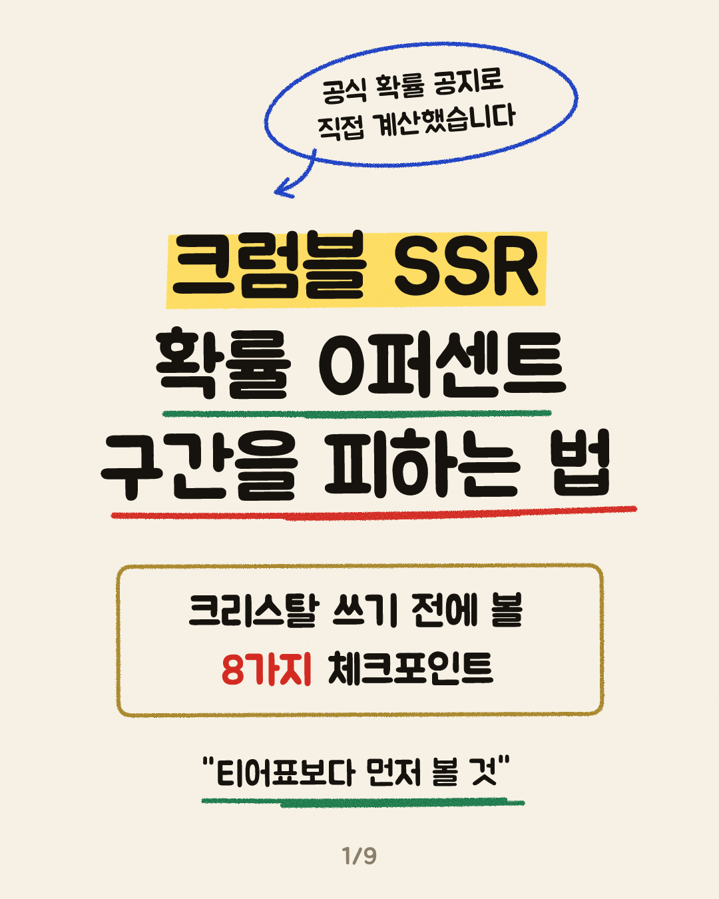
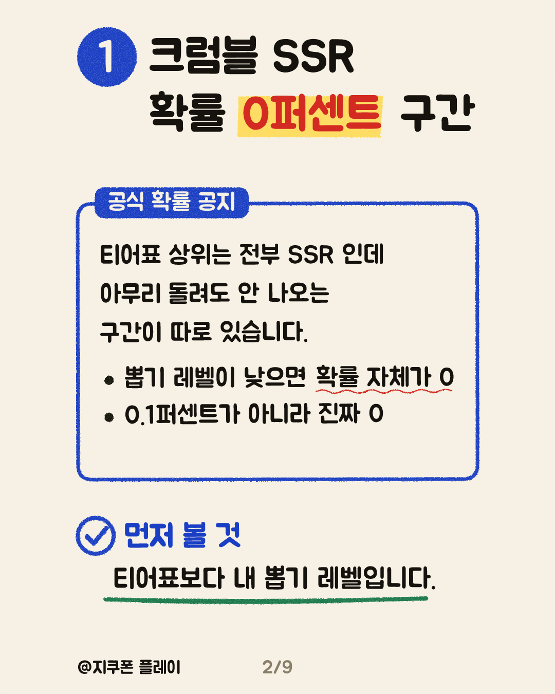
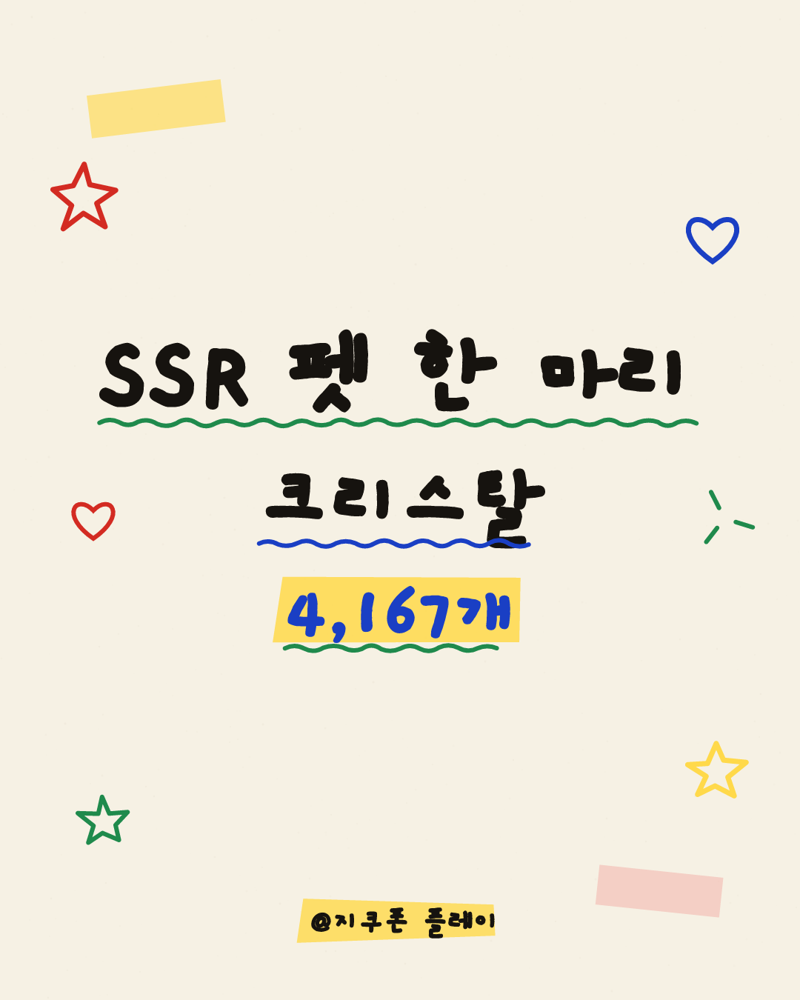
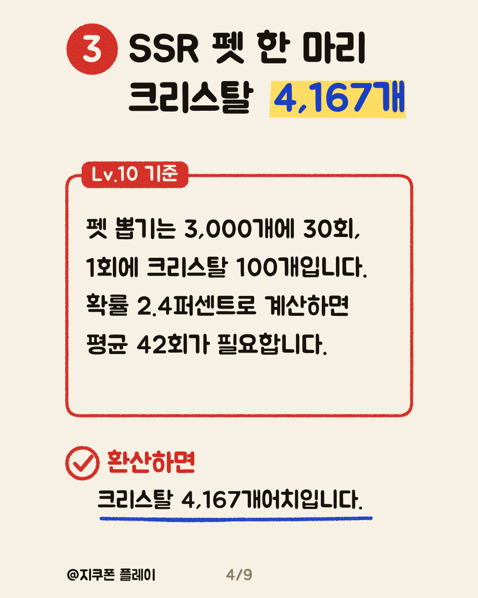
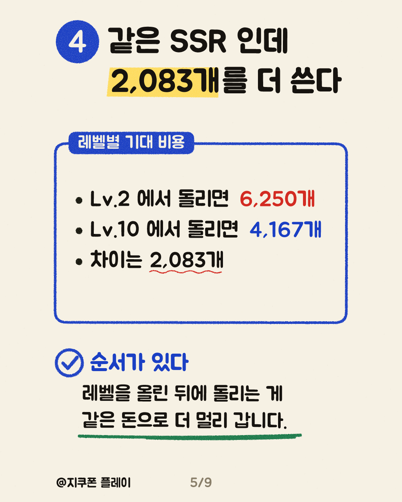
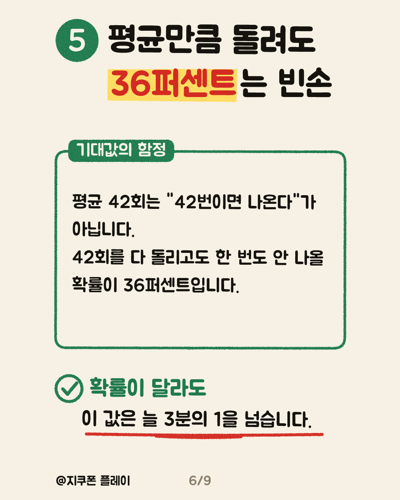
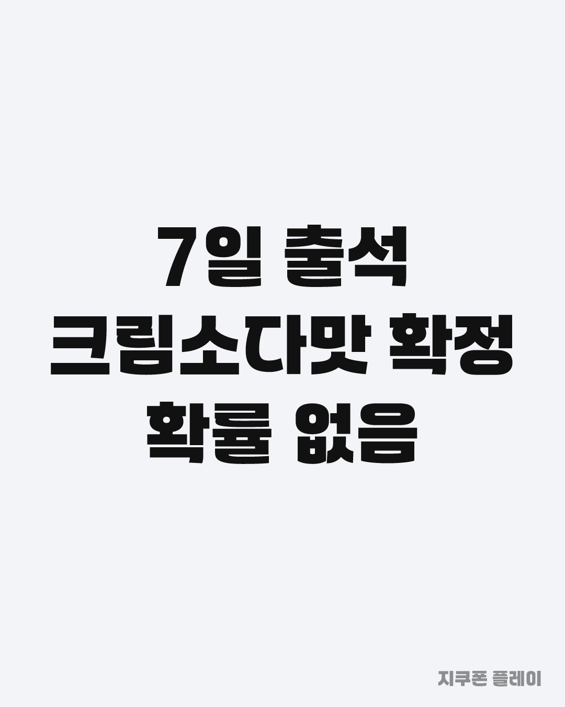
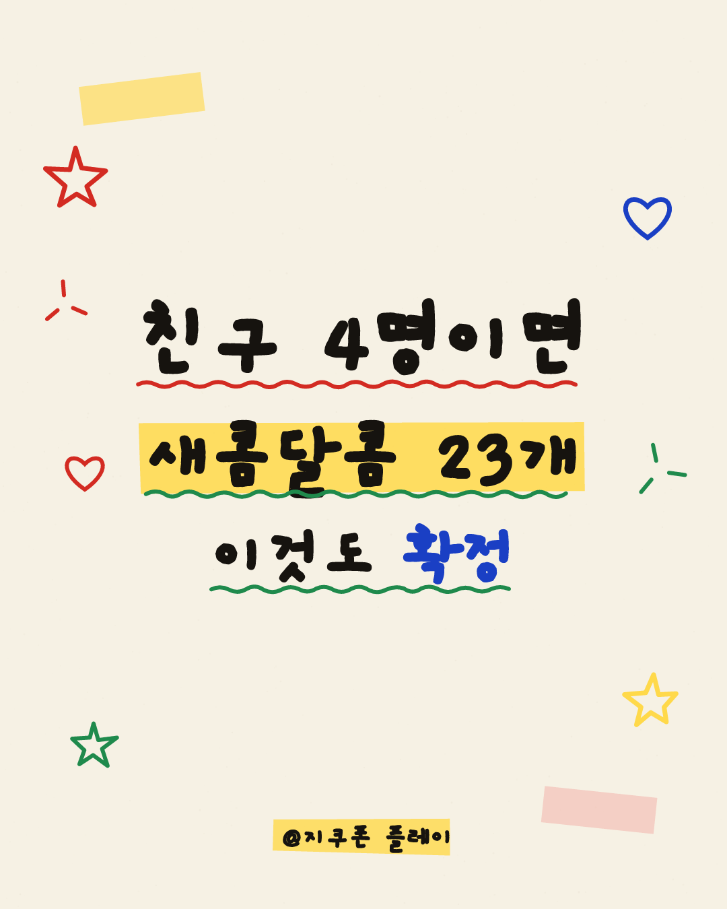

P1 · 후킹형 · 카드 1, 2, 3
쿠키런 크럼블 티어표를 아무리 봐도 소용없는 구간이 있습니다. 공식 확률 공지를 받아보니 뽑기 레벨 3까지는 SSR 등장 확률이 0퍼센트였습니다. 0.1퍼센트가 아니라 0이라서, 이 구간에서는 몇 번을 돌리든 SSR 이 안 나옵니다. 티어표 상위가 전부 SSR 인데 내 계정 뽑기 레벨이 낮다면 그 표는 아직 남의 이야기입니다. 혹시 뽑기 레벨부터 확인하고 계셨나요?
카드는 길게 눌러 저장하세요. 링크는 조회수 2,000을 넘긴 뒤 답글로만 답니다.








쿠키런 크럼블 티어표를 아무리 봐도 소용없는 구간이 있습니다. 공식 확률 공지를 받아보니 뽑기 레벨 3까지는 SSR 등장 확률이 0퍼센트였습니다. 0.1퍼센트가 아니라 0이라서, 이 구간에서는 몇 번을 돌리든 SSR 이 안 나옵니다. 티어표 상위가 전부 SSR 인데 내 계정 뽑기 레벨이 낮다면 그 표는 아직 남의 이야기입니다. 혹시 뽑기 레벨부터 확인하고 계셨나요?
크럼블 SSR 펫 한 마리 값을 크리스탈로 환산해 봤습니다. 펫 뽑기가 3,000개에 30회니까 1회 100개입니다. Lv.10 확률 2.4퍼센트로 계산하면 평균 42회, 크리스탈 4,167개가 나옵니다. Lv.2 에서 돌리면 6,250개라 같은 SSR 인데 2,083개를 더 씁니다. 그런데 여기가 함정입니다. 평균 42회를 돌려도 한 번도 안 나올 확률이 36퍼센트입니다. 확률이 달라도 이 값은 늘 3분의 1을 넘습니다. 기대값만 믿고 계획 세우셨다가 빈손 되신 적 있으신가요?
크럼블에서 확률을 아예 안 거치고 SSR 을 받는 경로가 둘 있습니다. 7일 출석하면 크림소다맛 쿠키가 확정 지급됩니다. 접속만 하면 됩니다. 친구 초대는 4명이면 새콤달콤 23개인데, 1명 1개 2명 7개 3명 15개로 구간마다 크게 뜁니다. 초대받은 쪽이 1-30 스테이지를 깨야 인정됩니다. 무과금이면 이 둘을 먼저 챙기고 뽑기를 계획하는 순서가 낫습니다. 친구 초대 4명은 채우기 어려우신가요?
쿠키런 크럼블 티어표보다 먼저 볼 것 뽑기 레벨 3까지는 SSR 확률이 0퍼센트입니다. Lv.10 기준 SSR 펫 한 마리는 크리스탈 4,167개, 평균 42회를 돌려도 36퍼센트는 빈손입니다. 확률 없이 받는 경로는 7일 출석과 친구 초대 4명입니다. 공식 확률 공지 원문을 계산한 수치입니다. #쿠키런크럼블